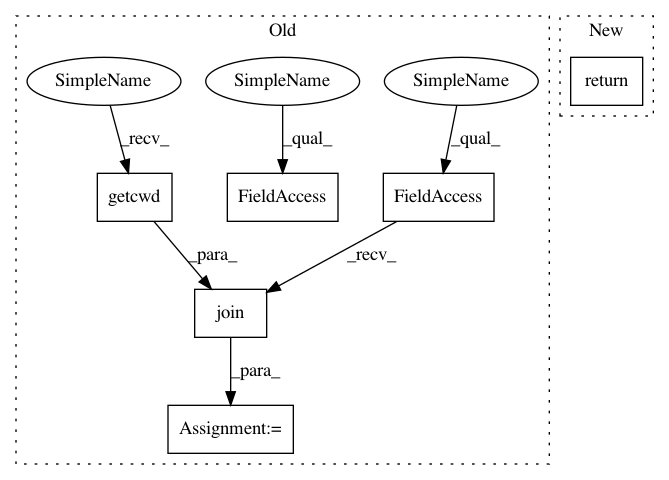

f1633934f7b643fbc32e014b2ae2b7ab4b9ba8a8,src/detection/deep/Convnet.py,,initialize,#,85
Before Change
def initialize():
global network
_enable_keras_multithreading()
current_dir = os.path.join(os.getcwd(), os.path.dirname(__file__))
//Best Net 64f4:
network_path = current_dir + "/" + "klein64-4f.e11-l0.045.hdf5"
network = _load_64f4c(network_path, True)
After Change
def initialize():
global network
if(not network is None): return
_enable_keras_multithreading()
//network = _load_64f4c(True)
network = convnet40()
In pattern: SUPERPATTERN
Frequency: 3
Non-data size: 6
Instances
Project Name: geometalab/OSMDeepOD
Commit Name: f1633934f7b643fbc32e014b2ae2b7ab4b9ba8a8
Time: 2015-11-15
Author: sevi_buehler@hotmail.com
File Name: src/detection/deep/Convnet.py
Class Name:
Method Name: initialize
Project Name: RasaHQ/rasa
Commit Name: f6e27f76726c25d3fb8885c98c12ddea4ac7faa7
Time: 2019-02-10
Author: tom@rasa.com
File Name: tests/base/test_multitenancy.py
Class Name:
Method Name: app
Project Name: geometalab/OSMDeepOD
Commit Name: f1633934f7b643fbc32e014b2ae2b7ab4b9ba8a8
Time: 2015-11-15
Author: sevi_buehler@hotmail.com
File Name: src/detection/deep/Convnet.py
Class Name:
Method Name: initialize
Project Name: fxsjy/jieba
Commit Name: 4197dfb8fa62574a86ec09fa5ddc33fd117d6464
Time: 2015-02-09
Author: abcdoyle888@gmail.com
File Name: jieba/__init__.py
Class Name:
Method Name: get_abs_path_dict